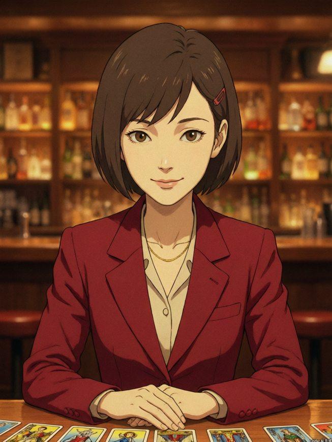

| 代号 | サフラン（Saffron／藏红）——一种红色香料，也是她的外套颜色 |
|---|---|
| 本名 | 夜凪 灯（よなぎ あかり／Yonagi Akari）※ 她不太用本名 |
| 年龄 | 29（自称）。酒保岩夫说是 31，两人对此从不争论 |
| 担当 | 夢探偵／塔罗牌读牌／精神分析 |
| 特技 | 把客人没说出口的那句话，原样摆回桌上 |
| 口头禅 | 「讲不清楚的地方，就是答案在的地方。」 |
| 收费 | 故事一个。讲完即可，不找零 |
萨弗兰不是那种会拍着你背说"会好起来的"的人。她会先把你的话一字一句听完，抽几张牌，问几个让人愣一下的问题，然后给你一份写得清清楚楚的结论。
结论不一定中听。但你可以反驳——她甚至希望你反驳，因为反驳的内容往往比陈述更真。
| 名前 | 霧島 岩夫（きりしま いわお／58） |
|---|---|
| 役職 | 店主／バーテン（历 30 年） |
| 特技 | 听人说话时绝不打断；气泡很细的琥珀ハイボール |
| 口头禅 | 「坐下吧，站着说话累。」 |
这间酒吧是他开的。关于"为什么只在夜里、只在网络上营业"，他笑而不答，然后给你续杯。
| 名前 | 瀬田 涟（せた れん／26） |
|---|---|
| 役職 | バーテン（历 3 年） |
| 特技 | 记得每位常客的口味；热牛奶会多加一点蜂蜜 |
| 口头禅 | 「……嗯。」（但会默默把你要的那杯推过来） |
话很少，但观察力好得惊人。有时候你还没开口，他要问的那句话已经放在你面前了。
RADIO CLUB 没有实体。你在地图上找不到它，白天也打不开它。
但夜里、当你确实带着某件想不明白的事时，这个网址会亮着灯。岩夫说这就像梦——梦也不占地方，可你醒来时脸上的泪是真的。
所以别纠结"这里是不是真的"。坐下，点单，把事讲清楚。剩下的交给我们。